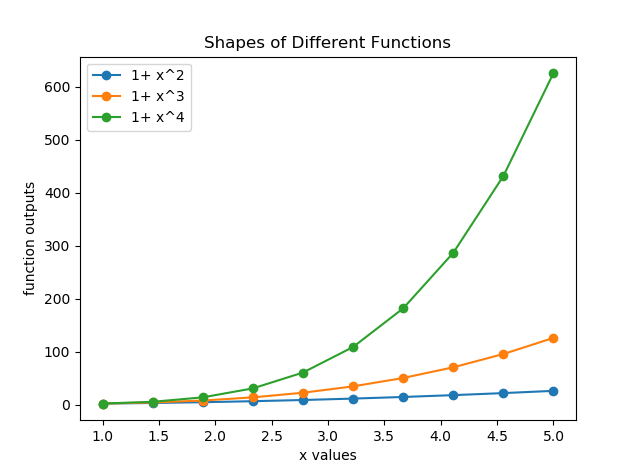

November 27 to December 1, 2017
All Python exercises are to be done using Anaconda Python Integrated Development Environment.
At some point during the lab, the demonstrator will circulate an attendance sheet. Sign it and pass it on.
It is difficult to create a lab that will keep every student occupied for exactly 50 minutes. If you are finished early, use the time to explore other options in your programs, or to help others around you. Most learning takes place when you try to do something and you don't know how at first. If you do not finish in the time available, look at the rest of the lab at some other time before next week's lab. Remember, the learning is cumulative, so if you don't learn something, next week's lab will seem harder.
matplotlib plots are displayed using various tools. It is useful to know the benefits of these tools, and how to choose them. The Graphics backend specifies how plots are displayed.
To change the Graphics backend:
You may need to close the current IPython console for the change to take effect. You will use the Automatic backend for exercises 2 and 4, and the Inline backend for exercise 3.
Before you can do anything with plots, you need to import matplotlib.pyplot
Generate 10 closely spaced x values between 1 and 5 using np.linspace. Then evaluate the following functions of x, and plot them versus x:
Ensure that your calculations are vectorized when evaluating the functions. That is, use array operations whenever possible.
Create a function that generates x values using np.linspace. Create a function with a parameter for each of the equation given above and return the y values. The parameter accepts x values. Append the y values in a numpy array in the main function. Create a new function that generates the plot with parameter x values, y values and function names. So this function should have 3 parameters. Generate a plot as given below.
The functions plt.xlabel, plt.ylabel, and plt.title each create a text string at an appropriate location in the plot. The function plt.legend creates a box with labels for each of the different plot objects. The function names will be the parameter for plt.legend

In your script file, replace all the calls to plt.plot with calls to plt.loglog, then plt.semilogx, then plt.semilogy. What is the difference between each?